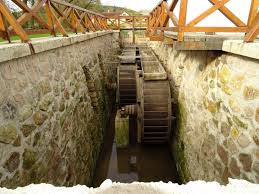
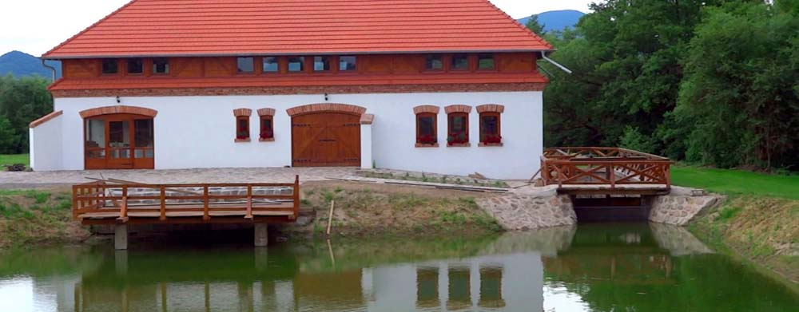
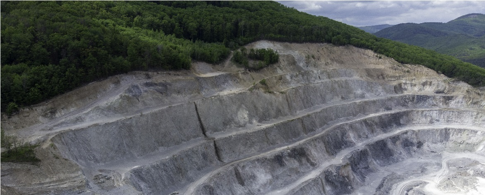
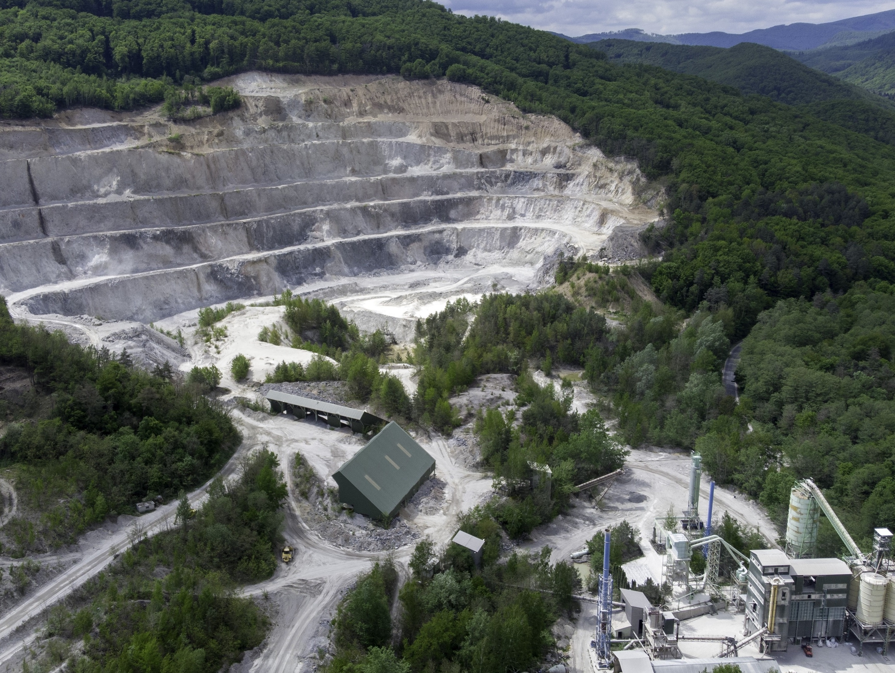
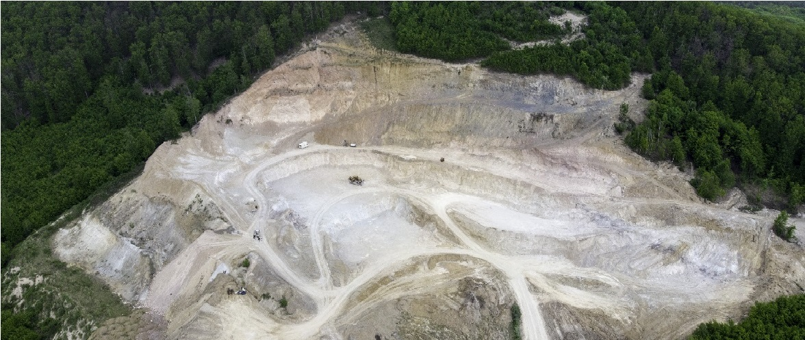

A hegyközi kisvonat nyomvonala mellett található malmot a helyi pékség tulajdonosa építette.
A látogatók itt bepillantást kapnak arról, milyen hosszú és fáradtságos útja volt a búzától a lisztig, hogy kenyér kerülhessen az asztalra.
Ma már ez a malom félig étteremként üzemel, viszont még megnézhető az egykori malom része is.
 Magyarország első perlitbányája Pálházán a Gyöngykőhegyen található. A pálházai perlitbánya 1958 óta működik. Közvetlenül a bánya melletti előkészítő üzemben történik a perlit őrlése, szárítása és osztályozása.
A hazai szükségleteken túlmenően a perlit döntő hányada külföldi értékesítésre kelül. A Perlit 92 Kft. 2006-ban megnyitotta második perlitbányáját, amely további 80 évre biztosítja a nyersperlit-ellátást.
  